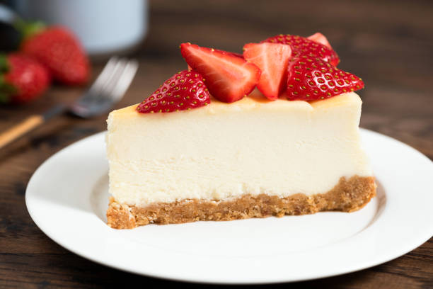

Cheesecake

Description
Cheesecake is a dessert that is filled with cheese, eggs,
and sugar over a crispy crust on the side and sometimes
topped with fruits. There are different types of cheescakes,
including New York-style cheesecake and Vegan cheesecake. Since
cheesecakes are made with natrual ingredients, there is a rich
source of vitamins and minerals.
Ingredients
- 1 1/2 cups graham cracker crumbs
- 2 tablespoons sugar
- 1 tablespoon brown sugar
- 7 tablespoons butter melted
- 32 oz cream cheese
- 1 cup sugar
- 2/3 cups sour cream
- 1 1/2 teaspoons vanilla extract
- 1/8 teaspoon salt
- 4 eggs
Steps
- Preheat oven to 325 F. Combine graham cracker crust with sugar
and add melted butter, sittring as needed. Add the crumbs inside 9" springform pan.
- Use a hand mixer to stir cream cheese until it is smooth. Add sugar and stir again.
- Add sour cream, vanilla extract, salt, and stir until well-combined.
- Add all of eggs in the mix and use spatula to scrape side of and bottom of bowl
to make sure the ingredients are combined.
- Pour cheesecake batter into prepared springform pan and place pan on a cookie dheet
that is lined with foil.
- Move the pan into the oven and bake on 325F for about 75 minutes.
- Remove from oven and allow to cool on top of oven for about 10 minutes. After 10 minutes,
use knife to loosen the crust from inside of the pan.
- Allow cheesecake to cool for another 1-2 hours until near room temperautre before puting it
in the refreigeator and allow to cool for at least 6 hours.